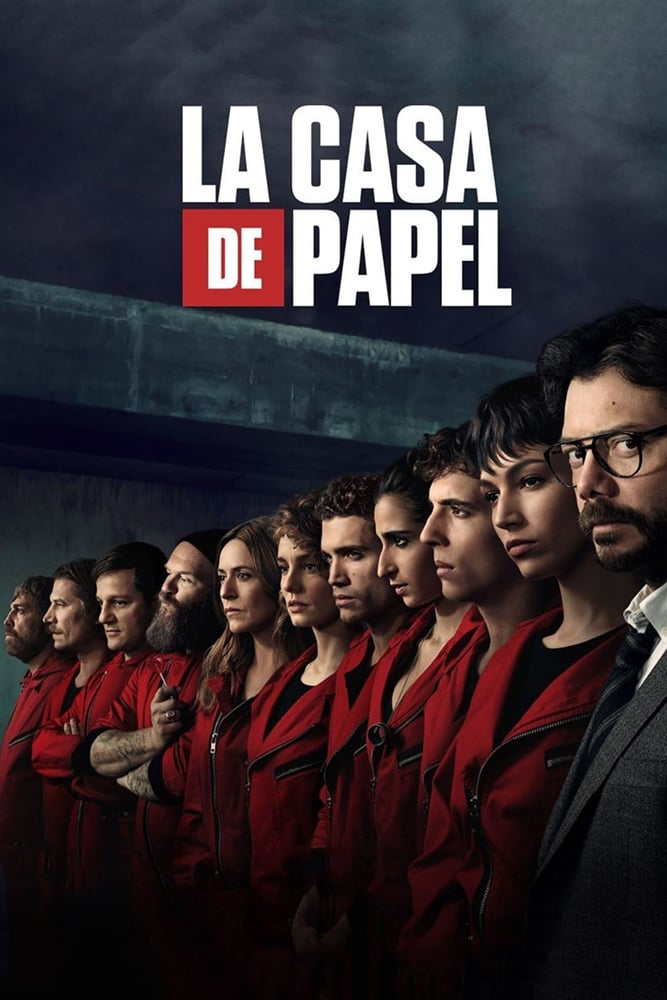

Casa de Papel

Un homme mystérieux, surnommé le Professeur, planifie le meilleur braquage jamais réalisé. Pour exécuter son plan, il recrute huit des meilleurs malfaiteurs en Espagne qui n'ont rien à perdre. Le but est d'infiltrer la Fabrique nationale de la monnaie et du timbre afin d'imprimer 2,4 milliards d'euros, en petites coupures de 50 € et cela en moins de onze jours, sans victimes — malgré la présence de 67 otages, dont la fille de l'ambassadeur du Royaume-Uni, Alison Parker.